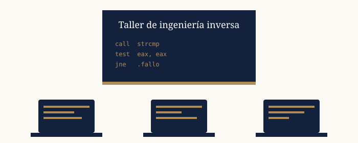

Diario RE
Mi viaje por la ingeniería inversa
Mi viaje por la ingeniería inversa
Aprender en grupo es mucho más divertido. Por eso organizo un taller mensual abierto a cualquiera que quiera iniciarse en la ingeniería inversa.

Cada mes organizo un taller gratuito de ingeniería inversa para principiantes. Resolvemos crackmes en grupo y aprendemos a usar Ghidra y x64dbg. Las sesiones duran dos horas y las plazas son limitadas a 20 personas.
| Sesión | Tema | Nivel |
|---|---|---|
| Octubre | Introducción al ensamblador | Principiante |
| Noviembre | Análisis estático con Ghidra | Principiante |
| Diciembre | Depuración con x64dbg | Intermedio |
| Enero | Retos de reversing en CTF | Intermedio |
Rellena el siguiente formulario para reservar tu plaza:
Asier Ying © 2026 · Made by Claude AI